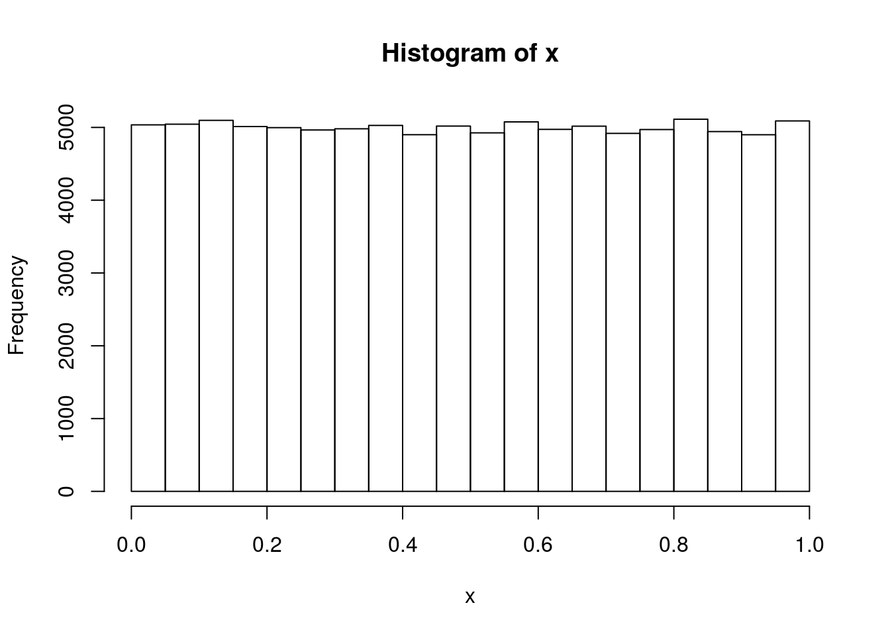
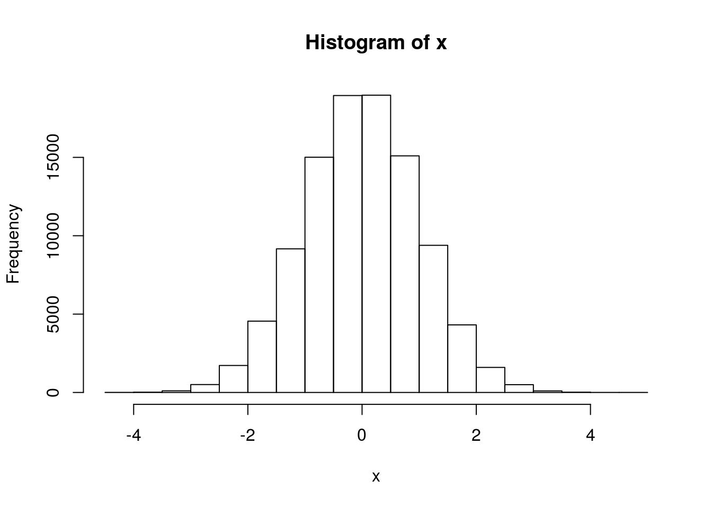
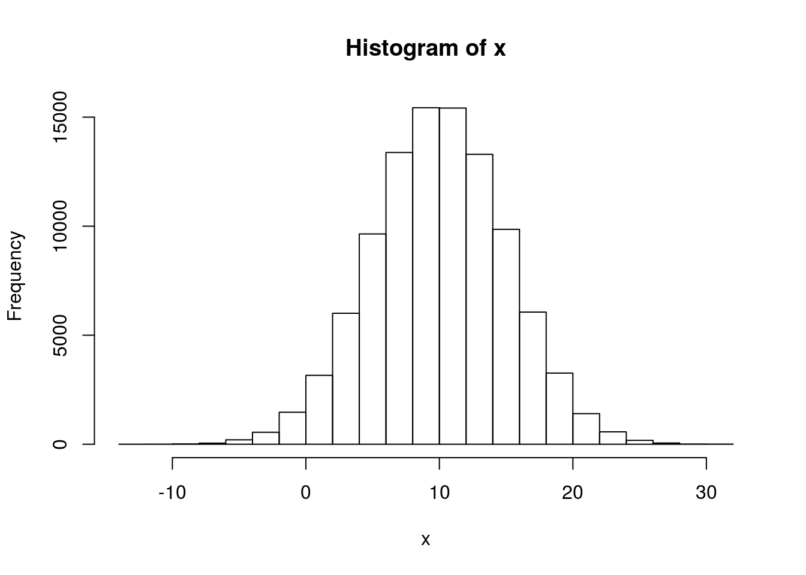
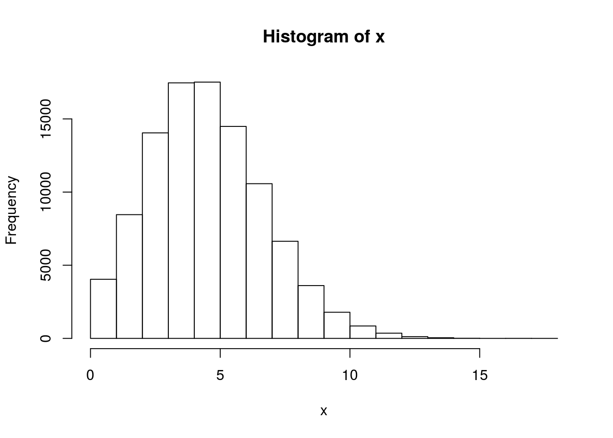
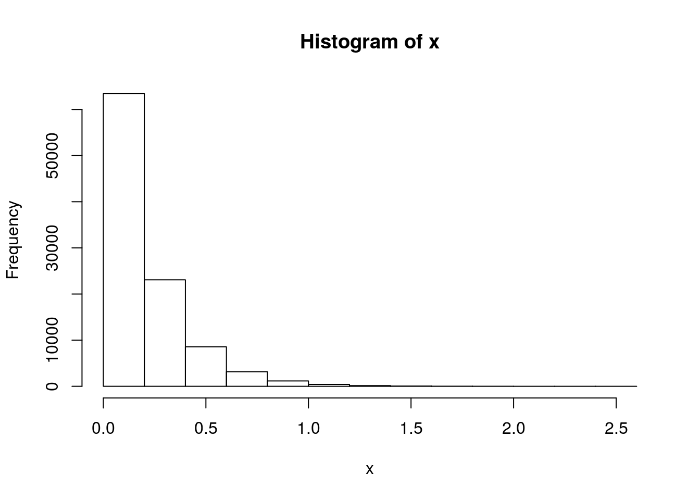

To install R just follow the instructions available at http://cran.r-project.org
RStudio is the most popular Integrated Development Environment (IDE) for R that is developed by the company of the same name. While having RStudio is not a requirement for using netdiffuseR, it is highly recommended.
To get RStudio just visit https://www.rstudio.com/products/rstudio/download/.
netdiffuseR has two different versions: the development version (available at https://github.com/USCCANA/netdiffuseR), and the stable version (available on https://cran.r-project.org/package=netdiffuseR). You can get either of the two but it is significantly easier to get the stable version (and we recommend to do so)
For this version just go to your R console and type:
install.packages("netdiffuseR")Some common tasks in R
Getting help (and reading the manual) is THE MOST IMPORTANT thing you should know about. For example, if you want to read the manual (help file) of the read.csv function, you can type either of these:
?read.csv
?"read.csv"
help(read.csv)
help("read.csv")If you are not fully aware of what is the name of the function, you can always use the fuzzy search
help.search("linear regression")
??"linear regression"In R you can create new objects by either using the assign operator (<-) or the equal sign =, for example, the following 2 are equivalent:
a <- 1
a = 1Historically the assign operator is the most common used.
R has several type of objects, the most basic structures in R are vectors, matrix, list, data.frame. Here is an example creating several of these (each line is enclosed with parenthesis so that R prints the resulting element):
(a_vector <- 1:9)## [1] 1 2 3 4 5 6 7 8 9(another_vect <- c(1, 2, 3, 4, 5, 6, 7, 8, 9))## [1] 1 2 3 4 5 6 7 8 9(a_string_vec <- c("I", "like", "netdiffuseR"))## [1] "I" "like" "netdiffuseR"(a_matrix <- matrix(a_vector, ncol = 3))## [,1] [,2] [,3]
## [1,] 1 4 7
## [2,] 2 5 8
## [3,] 3 6 9(a_string_mat <- matrix(letters[1:9], ncol=3)) # Matrices can be of strings too## [,1] [,2] [,3]
## [1,] "a" "d" "g"
## [2,] "b" "e" "h"
## [3,] "c" "f" "i"(another_mat <- cbind(1:4, 11:14)) # The `cbind` operator does "column bind"## [,1] [,2]
## [1,] 1 11
## [2,] 2 12
## [3,] 3 13
## [4,] 4 14(another_mat2 <- rbind(1:4, 11:14)) # The `rbind` operator does "row bind"## [,1] [,2] [,3] [,4]
## [1,] 1 2 3 4
## [2,] 11 12 13 14(a_string_mat <- matrix(letters[1:9], ncol = 3))## [,1] [,2] [,3]
## [1,] "a" "d" "g"
## [2,] "b" "e" "h"
## [3,] "c" "f" "i"(a_list <- list(a_vector, a_matrix))## [[1]]
## [1] 1 2 3 4 5 6 7 8 9
##
## [[2]]
## [,1] [,2] [,3]
## [1,] 1 4 7
## [2,] 2 5 8
## [3,] 3 6 9(another_list <- list(my_vec = a_vector, my_mat = a_matrix)) # same but with names!## $my_vec
## [1] 1 2 3 4 5 6 7 8 9
##
## $my_mat
## [,1] [,2] [,3]
## [1,] 1 4 7
## [2,] 2 5 8
## [3,] 3 6 9# Data frames can have multiple types of elements, it is a collection of lists
(a_data_frame <- data.frame(x = 1:10, y = letters[1:10]))## x y
## 1 1 a
## 2 2 b
## 3 3 c
## 4 4 d
## 5 5 e
## 6 6 f
## 7 7 g
## 8 8 h
## 9 9 i
## 10 10 jDepending on the type of object, we can access to its components using indexing:
a_vector[1:3] # First 3 elements## [1] 1 2 3a_string_vec[3] # Third element## [1] "netdiffuseR"a_matrix[1:2, 1:2] # A sub matrix## [,1] [,2]
## [1,] 1 4
## [2,] 2 5a_matrix[,3] # Third column## [1] 7 8 9a_matrix[3,] # Third row## [1] 3 6 9a_string_mat[1:6] # First 6 elements of the matrix. R stores matrices by column.## [1] "a" "b" "c" "d" "e" "f"# These three are equivalent
another_list[[1]]## [1] 1 2 3 4 5 6 7 8 9another_list$my_vec## [1] 1 2 3 4 5 6 7 8 9another_list[["my_vec"]]## [1] 1 2 3 4 5 6 7 8 9# Data frames are just like lists
a_data_frame[[1]]## [1] 1 2 3 4 5 6 7 8 9 10a_data_frame[,1]## [1] 1 2 3 4 5 6 7 8 9 10a_data_frame[["x"]]## [1] 1 2 3 4 5 6 7 8 9 10a_data_frame$x## [1] 1 2 3 4 5 6 7 8 9 10Control-flow statements
# The oldfashion forloop
for (i in 1:10) {
print(paste("I'm step", i, "/", 10))
}## [1] "I'm step 1 / 10"
## [1] "I'm step 2 / 10"
## [1] "I'm step 3 / 10"
## [1] "I'm step 4 / 10"
## [1] "I'm step 5 / 10"
## [1] "I'm step 6 / 10"
## [1] "I'm step 7 / 10"
## [1] "I'm step 8 / 10"
## [1] "I'm step 9 / 10"
## [1] "I'm step 10 / 10"# A nice ifelse
for (i in 1:10) {
if (i %% 2) # Modulus operand
print(paste("I'm step", i, "/", 10, "(and I'm odd)"))
else
print(paste("I'm step", i, "/", 10, "(and I'm even)"))
}## [1] "I'm step 1 / 10 (and I'm odd)"
## [1] "I'm step 2 / 10 (and I'm even)"
## [1] "I'm step 3 / 10 (and I'm odd)"
## [1] "I'm step 4 / 10 (and I'm even)"
## [1] "I'm step 5 / 10 (and I'm odd)"
## [1] "I'm step 6 / 10 (and I'm even)"
## [1] "I'm step 7 / 10 (and I'm odd)"
## [1] "I'm step 8 / 10 (and I'm even)"
## [1] "I'm step 9 / 10 (and I'm odd)"
## [1] "I'm step 10 / 10 (and I'm even)"# A while
i <- 10
while (i > 0) {
print(paste("I'm step", i, "/", 10))
i <- i - 1
}## [1] "I'm step 10 / 10"
## [1] "I'm step 9 / 10"
## [1] "I'm step 8 / 10"
## [1] "I'm step 7 / 10"
## [1] "I'm step 6 / 10"
## [1] "I'm step 5 / 10"
## [1] "I'm step 4 / 10"
## [1] "I'm step 3 / 10"
## [1] "I'm step 2 / 10"
## [1] "I'm step 1 / 10"r[name-of-the-distribution], e.g. rnorm for normal, runif for uniform.d[name-of-the-distribution], e.g. dnorm for normal, dunif for uniform.p[name-of-the-distribution], e.g. pnorm for normal, punif for uniform.q[name-of-the-distribution], e.g. qnorm for the normal, qunif for the uniform.Here are some examples:
# To ensure reproducibility
set.seed(1231)
# 100,000 Unif(0,1) numbers
x <- runif(1e5)
hist(x)
# 100,000 N(0,1) numbers
x <- rnorm(1e5)
hist(x)
# 100,000 N(10,25) numbers
x <- rnorm(1e5, mean = 10, sd = 5)
hist(x)
# 100,000 Poisson(5) numbers
x <- rpois(1e5, lambda = 5)
hist(x)
# 100,000 rexp(5) numbers
x <- rexp(1e5, 5)
hist(x)
More distributions available at ??Distributions.
For a nice intro to R, take a look at “The Art of R Programming” by Norman Matloff. For more advanced users, take a look at “Advanced R” by Hadley Wickham.
Building an R package from source means that you will use R CMD INSTALL utility on the command line of your operating system. Depending on the R package, it may require having a C/C++ compiler such as gcc g++ or clang. This makes installing packages from source code a bit harder, that’s why we recommend getting the CRAN version which is already compiled and ready for your operating system.↩